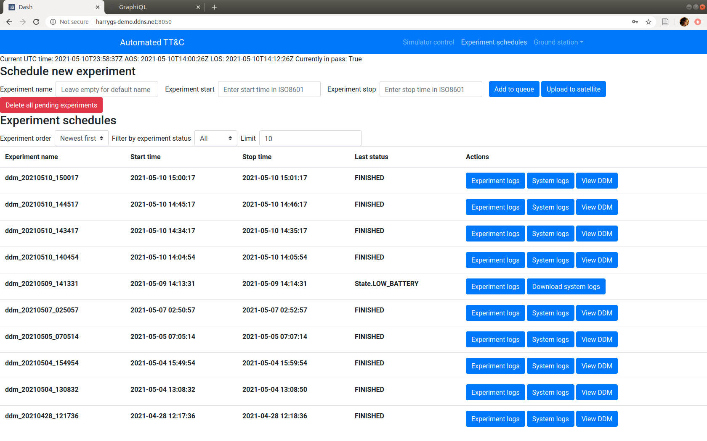
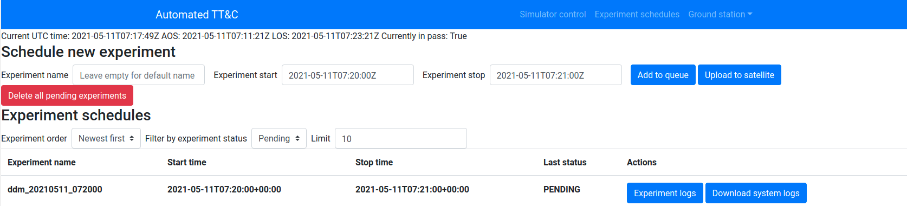
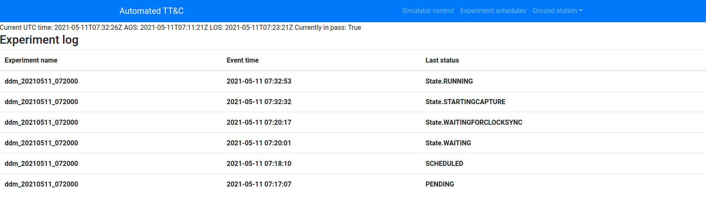
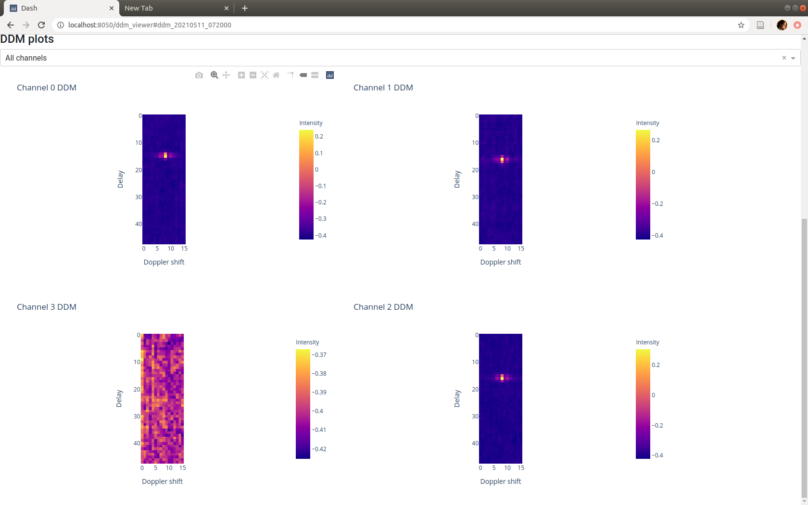

Guide on using Automated Payload TT&C demo system¶
Warning
This page is under development. The instructions here are enough to use this demo system to schedule an experiment, however more functions will be implemented in the future.
Overview¶
This documentation will guide you on using Automated Payload TT&C application at http://harrygs-demo.ddns.net:8050/ to schedule a real GNSS reflectometry experiment on a test satellite setup on ACSER. The workflow will be this:
Get access to the website
Schedule a new experiment
Check for experiment progress
View the result of the experiment
Getting access to the demo website¶
Please contact opensource.acser@gmail.com to get the login details to access the demo website. After getting the username and password, log into http://harrygs-demo.ddns.net:8050/ with the provided username and password. You will be brought into Automated Payload TT&C homepage:
{kind=link}
You can go back to this homepage from anywhere in this web app by clicking Automated TT&C name on the top left or by clicking Experiment
schedules on the navigation bar.
Scheduling a new experiment¶
You will see Schedule new experiment section on the homepage, which contains 3 entry fields:
Optional experiment name
Start time
Stop time
Fill in the desired experiment start time and stop time in ISO 8601 with timezone format, such as
2021-05-11T06:06:01+00:00 Example entry is below:
{kind=link}
Then, you can fill in your desired experiment name, or leave it empty to use autogenerated experiment
name based on the experiment start time. For example, if your start time is 2021-05-11T06:06:01+00:00,
then the system will automatically set the experiment name to ddm_20210511_060601.
Now, the experiment is scheduled on the ground station, but not yet sent to the satellite yet. To see the scheduled experiments, click on the Filter by experiment status dropdown and select Pending.
{kind=link}
You can delete all the pending experiments by clicking Delete all pending experiments button.
When you’re satisfied with your experiment schedules, click on Upload to Satellite button. The system will then
generate schedules in KubOS scheduler format, and upload it to the simulated satellite on the next pass. It will then show
up as SCHEDULED in the Last status column.
{kind=link}
Monitoring experiment progress¶
To monitor your experiment, click on Experiment logs button on the table. It will bring you to a page showing the history of events for your scheduled experiment, and check if any errors has happened.
{kind=link}
Most of the time, the system onboard the (simulated) satellite will automatically recover from any faults without any intervention from ground station.
Retrieving and analysing data from experiment¶
After the experiment has finished, the system will automatically download the experiment. To view the downloaded data,
click on View DDM button. It will bring you to another web page. Then, click on the View DDMs button.
{kind=link}
There are 3 sections in this page:
World map that shows the GNSS signal reflection points. It is color coded with the SNR of the reflected signal
Histogram of the reflected signal SNR
DDM plots
Drag the world map to pan it around, and use scroll wheel to zoom. Then, hover over one of points on the world map. The DDM plots corresponding to the point will be displayed on the bottom on the screen, where you can scroll down to see all of it.
{kind=link}
To download the data, click the Download DDM dropdown menu. You can select file type from the menu. Both of them are in SQLite
format, which can be viewed using DB Browser for SQLite
Controlling the simulator¶
Click on Simulator control on the nav bar. This will bring you to a web application that controls a service in the ground station computer
that simulates satellite passes. There are 3 sections:
Simulated pass information
Simulation parameters
Simulation controls
To simulate a pass, click on Skip to next pass/AOS. To simulate a LOS event, click on Skip to next LOS. To reset the simulation,
click on Reset simulation, where the simulator will go back to real time and start its pass window from there.
To bypass the simulator, click on Enable always pass, where the simulator will say that the satellite is always in pass. Disable this
by clicking Disable always pass, where the simulator will then simulate intermittent connectivity to the simulated satellite.